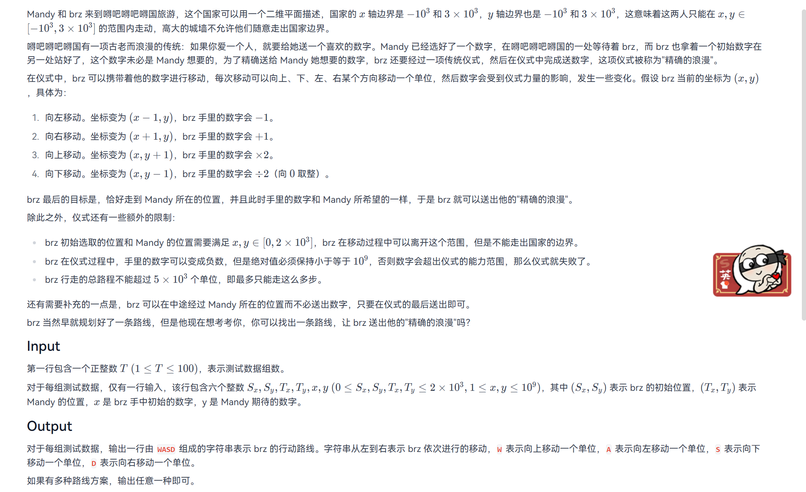
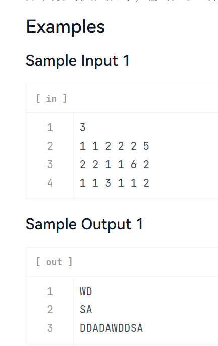

brz 在二维平面中移动，每一步不仅改变坐标，还会对手中的数字进行运算。 目标是在不越界、不超过 5000 步的前提下， 到达 Mandy 的位置，并且手中数字恰好等于目标值， 同时输出完整移动路径。
关键转化：
+1 / -1*2 / /2#include <bits/stdc++.h>
using namespace std;
int main(){
ios::sync_with_stdio(false);
cin.tie(nullptr);
int sx,sy,tx,ty;
long long v0,v1;
cin>>sx>>sy>>v0;
cin>>tx>>ty>>v1;
// 1️⃣ 坐标 BFS
const int MAX=2000;
vector<vector<int>> vis(MAX+1,vector<int>(MAX+1,-1));
queue<pair<int,int>> q;
q.push({sx,sy});
vis[sx][sy]=0;
int dx[4]={1,-1,0,0};
int dy[4]={0,0,1,-1};
char dc[4]={'D','A','W','S'};
vector<vector<char>> pre(MAX+1,vector<char>(MAX+1));
while(!q.empty()){
auto [x,y]=q.front();q.pop();
if(x==tx && y==ty) break;
for(int i=0;i<4;i++){
int nx=x+dx[i],ny=y+dy[i];
if(nx<0||ny<0||nx>MAX||ny>MAX) continue;
if(vis[nx][ny]!=-1) continue;
vis[nx][ny]=vis[x][y]+1;
pre[nx][ny]=dc[i];
q.push({nx,ny});
}
}
// 回溯坐标路径
string path="";
int x=tx,y=ty;
while(x!=sx||y!=sy){
char c=pre[x][y];
path.push_back(c);
if(c=='D') x--;
if(c=='A') x++;
if(c=='W') y--;
if(c=='S') y++;
}
reverse(path.begin(),path.end());
// 2️⃣ 数字调整（反向）
string ops="";
while(v1!=v0){
if(v1>v0){
if(v1%2==0){ v1/=2; ops.push_back('W'); }
else{ v1--; ops.push_back('D'); }
}else{
v1++; ops.push_back('A');
}
}
reverse(ops.begin(),ops.end());
// 3️⃣ 输出
cout<<path<<ops<<'\n';
return 0;
}